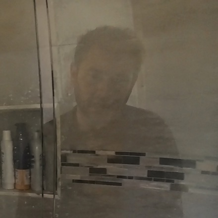
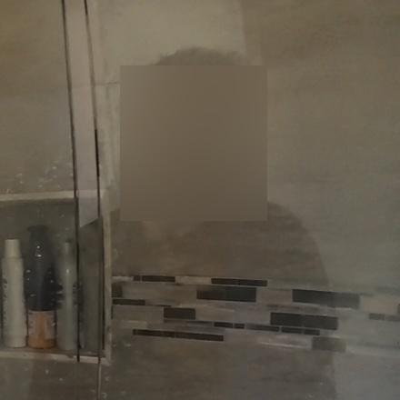

Finding faces in mirrors and shower glass
TL;DR
- As a quick draft for this application, I fine-tuned RF-DETR Small (Apache-2.0, commercial use allowed) into a face detector: 10 epochs on 10,000 ordinary Open Images photos, one A10 GPU, with no reflection or synthetic data.
- On 22 home scenes built around your failure cases (mirrors, fridge doors, shower glass; 9 contain no face) it found 14 of 14 faces and fired on 1 of 9 empty scenes. YuNet, your current detector, found 10 of 14 and fired on 5 of 9.
- It finds the face behind shower glass, the case your listing says nothing caught.
- Caveats: the 22 scenes are generated images, not GoPro footage, and no model here reaches 99% recall on ordinary photos yet. Closing that gap on your clips is the trial.
- The next step I'd test is fine-tuning on generated images of your hard cases: reflections in mirrors, appliance doors and shower glass, plus face-like objects that should not be blurred.
The shower-glass case


Generated test image, not real footage. Full frames: before · after · all 22 scenes × 6 models. The rest of the frame is untouched. The box clips the top of the hair, which is why box coverage is on the trial list below.


Results on the hard scenes
22 images: 13 with a reflected face (14 faces), 9 with no face but plenty of glass and steel. All models at confidence 0.40, box match at IoU ≥ 0.5.
| Model | Faces found | Empty scenes with a false alarm | Commercial licence |
|---|---|---|---|
| RF-DETR Small, my fine-tune | 14 / 14 | 1 / 9 | Yes (Apache-2.0) |
| RF-DETR Small, before fine-tune | 0 / 14 | 3 / 9 | Yes |
| SCRFD 2.5GF | 12 / 14 | 0 / 9 | No (research only) |
| YuNet multiscale | 10 / 14 | 5 / 9 | Yes (MIT) |
| RetinaFace MobileNet | 8 / 14 | 0 / 9 | Unclear |
| SAM 3.1, prompt “face” | 14 / 14 | 5 / 9 | — |
Before fine-tuning, RF-DETR has no face class, so its person boxes stand in as a proxy. That 0 → 14 is the number the fine-tune moved.
Results on ordinary photos
400 held-out Open Images photos (200 with faces, 329 faces in total; 200 with none). For each model I used the cutoff that gives the most recall while keeping precision at 95% or above.
| Model | Recall | Precision | Empty photos with a false alarm |
|---|---|---|---|
| SCRFD 2.5GF (research licence) | 73.3% | 96.0% | 4 / 200 |
| RF-DETR Small, my fine-tune | 65.3% | 95.1% | 10 / 200 |
| YuNet multiscale | 64.7% | 96.4% | 6 / 200 |
| RetinaFace MobileNet | 47.1% | 95.7% | 5 / 200 |
These are small, crowded faces in thumbnails of 640 px or less, much harder than a face in a 4K frame. The RF-DETR base model never reached 95% precision here. Stills say nothing about tracking a face across a span of frames.
What this does not show
- Performance on real head-mounted GoPro footage. I have not seen yours.
- Recall over a face's whole time span. Your score counts every frame, and that needs tracking across frames, which this work does not cover.
- Speed and cost per video-hour for RF-DETR on 4K. I have measured YuNet and RetinaFace on 4K clips only.
- Any gain from synthetic training data. That has not been run yet.
Proposed approach
Model. I'd start from RF-DETR Small. It is a small real-time detector with a DINOv2 backbone, it fine-tunes quickly, and its Apache-2.0 weights allow commercial use. Even after this short draft run it matches face detectors pretrained on WIDER FACE (YuNet, RetinaFace). SCRFD scores higher on ordinary photos, but its pretrained weights are for research only, so it appears above as a reference and would not go into your pipeline. I'd also test smaller detectors, which are faster and cheaper per video-hour, to see whether they reach the same accuracy after the same fine-tuning.
Data: synthetic hard cases. Public face datasets contain almost no faces in shower glass or fridge doors, which is the gap your footage exposes. I'd generate images of exactly those scenes with an image-generation model, as in the 22 test scenes above. I'd also generate negatives: toys, cartoon prints and packaging that look like faces but must stay unblurred. The training mix keeps real face photos alongside the generated images, and success is measured only on your real clips. I haven't trained on synthetic data here yet. Training on synthetic views to work on real images is the topic of my 3DV 2022 paper, and the draft model already handles these scenes reasonably without having seen any, so I think the direction is worth testing.
Labels: large teacher models, small fast student. Large models with more context generalise to hard cases far better than small detectors. That includes DINO-based detectors, SAM 3 and frontier multimodal LLMs. In the hard-scene table above, SAM 3.1 found all 14 reflected faces, but it also fired in 5 of 9 empty scenes and runs at 0.2 images per second. That makes it a good labeller and unusable in production. So I would distil the large models into the small detector through their labels:
- Large teacher models label hard cases: your missed spans, generated reflection scenes, and face-like toys and prints.
- Their false alarms are filtered out with tracking consistency across frames and checked against a hand-annotated golden set from your clips.
- The small, cheap detector is fine-tuned on the filtered labels and scored only on your real clips.
Distillation is one of my research topics (BMVC 2022), and this filtering is the same idea as the robust pseudo-labelling in my BMVC 2019 detection paper. Your footage is under NDA, so it is labelled only by models running on my machine, plus the hand-annotated golden set. Frontier LLM APIs only ever see generated images.
Metric: face coverage, not IoU. Standard detection scoring (IoU ≥ 0.5) counts a box that covers only half a face as a hit, and that half face stays visible. For redaction I would score:
- Coverage of each labelled face: the share of the face area inside the blur. The target is ≥ 99% coverage, not a box overlap score. Of the 14 faces above, only 7 reach it with the current padding.
- Blur spill: blurred area outside any face, and seconds of blur in face-free stretches. This reflects your “only the face” requirement.
- Recall per face span, matching your scoring. A face counts as protected only if every frame in its span is covered.
4K video. A reflected face can be 40 px wide in a 4K frame. If the whole frame is shrunk to the detector's input size, that face disappears, so I'd add tiles at native resolution to the full-frame pass. Tracking forward and backward then bridges single missed frames. Cost is measured per video-hour on a stated GPU, with decoding and encoding included.
How I would use the trial week
One week is short, so the plan does the reliable work first and gives the synthetic-data experiment a fixed time slot alongside it.
- Day 1. Run your current YuNet setup and my detector on the 15 clips and score both per face span against
face_timestamps.csv, which is used only for scoring. Group the misses: mirror, glass, small face, motion blur. - Days 2–4. Raise recall with methods that don't need new training: tiles at native resolution for small reflections, tracking to bridge missed frames, and padding tuned so the whole face is covered. In parallel, run one fine-tune on teacher-labelled hard cases (generated scenes plus the day-1 misses). It goes into the PR only if it beats the version without it on your clips.
- Days 5–6. Choose the cutoff, render all 15 clips, and measure throughput and $ per video-hour on a named GPU.
- Day 7. Deliver the videos, the metrics report, a PR with run instructions, and a weights/licence list. Only commercially licensed weights go into the PR.
Smaller models, a large synthetic set and a bigger hand-labelled set are follow-on work if you keep me on. They need more than a week to test properly.
On irreversibility: the face pixels are replaced before encoding, so the original pixels never reach the output file. A solid fill is fully irreversible. A light Gaussian blur can be partly undone, so if you want blur I would make it strong and check it by running a face matcher on the output. Outside the box the frame is untouched apart from the re-encode.